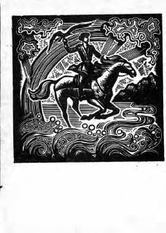

SSQoraqalpoq mumtoz shoiri Berdaqning sara she'r va dostonlari to'plami.
Ushbu to'plamga qoraqalpoq xalqining atoqli klassik shoiri Berdaqning mashhur she'rlari va dostonlari kiritilgan. Asarlar taniqli shoir va tarjimon Mirtemir tomonidan o'zbek tiliga tarjima qilingan. Kitobdan shoirning turli yillarda yozilgan sara ijod namunalari o'rin olgan.